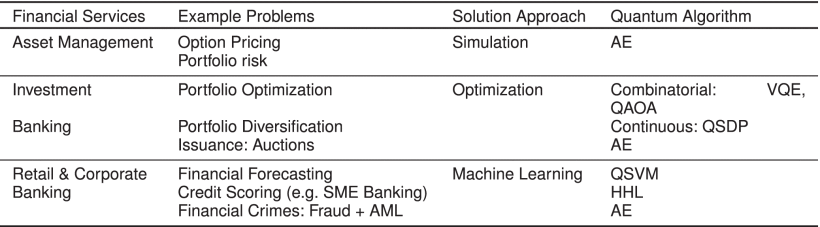

Due to the complexity of the financial market, Quantum Computing can provide computational advantages, because it has the capability to process information that classical algorithms cannot, enhancing the speed in computations. Quantum Machine Learning can optimize financial portfolio management, minimize risk and generate sustainable returns. For example, the Quantum Support Vector Machine (QSVM) combines classical and quantum components, Quantum Circuit Optimization techniques and Noise mitigation are applied to enhance the performance of QSVM and to identify and correct the errors.
There are several quantum algorithms that can be used for Asset Management, as showed below( (source))
Quantum Computing technology can enhance speed and accuracy in decision-making. QSVM (Quantum Support Vector Machine) can handle a wide range of information, such as stock price, volumes and economic indicators. The quantum nature allows it to analyze tremendous volumes of financial data at once, it provides the flexibility for parallel processing. The parallelism enables the algorithms to explore multiple solutions simultaneously, enhancing the speed in computation.
Quantum algorithms can process many real-time market data and lead to more accurate and less delayed investing decisions for optimizing returns.
Quantum computing can efficiently modeling probabilistic outcomes. Quantum-enhanced Monte Carlo algorithms demonstrate significant improvements in both speed and precision, offering financial institutions the capability to conduct more sophisticated and timely risk evaluations. This quantum approach enables the analysis of intricate risk scenarios that would be computationally prohibitive using classical methods alone.